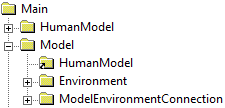
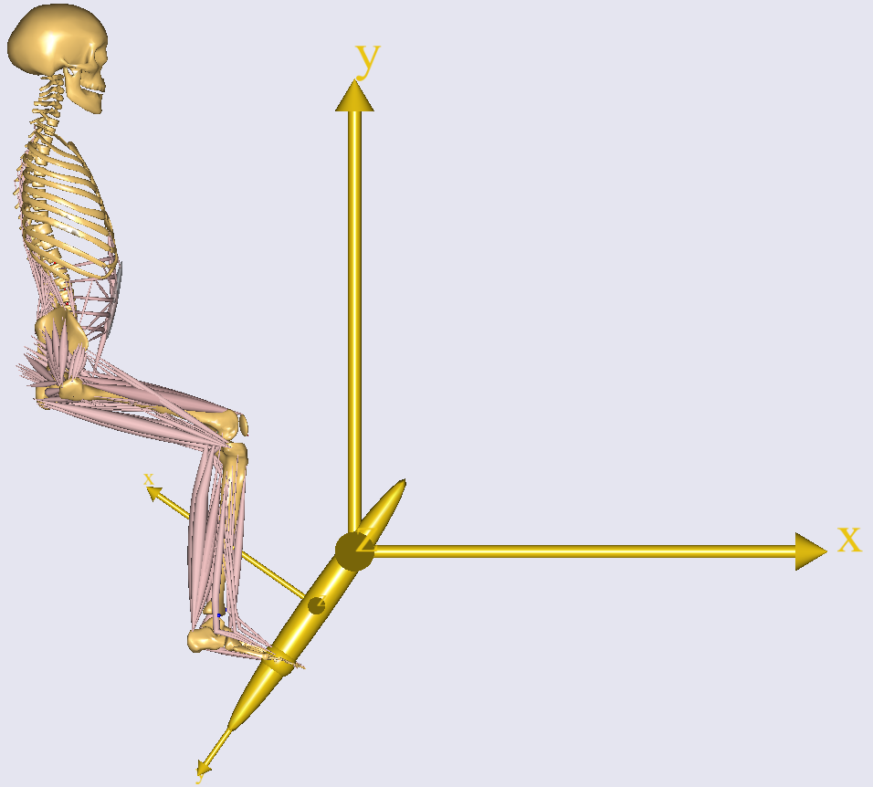
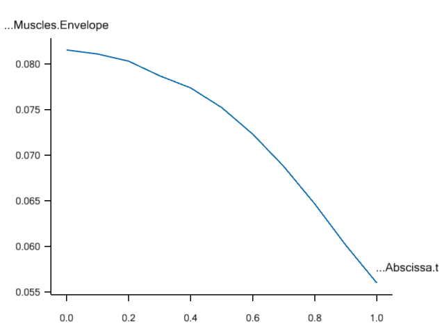

Lesson1: Mechanical System Information
Lesson1: Mechanical System Information#
In this lesson we are presuming that you have the arm2d.any file loaded
into AnyBody. If you do not have the model on file, please download and
save a copy from this link: arm2d.any. It should look like this when
you have loaded the model, run InitialConditions operation, and opened a
Model View:

The mechanics of this model is fairly simple in the sense that it only has two segments and two revolute joints. However, in more realistic models with dozens of segments connected by many joints of different types it can be very difficult to maintain the overview of the model. Making a model move requires a balance between the number of kinematic degrees of freedom and the number of constraints, and it can be difficult to get it completely right.
This is where the systematic model information becomes important. Mechanical studies are equipped with a mechanical system description. This is included in the study’s Objects Description, which is found by double-clicking the objects in any Model Tree View. Double-click the ArmModel study folder in the loaded model and you will find a System description like this:

The Mechanical System Information is comprised of four sections: 0) Contents, 1) List of segments, 2) List of joints and kinematic constraints, and 3) List of reaction forces.
In a simple model like arm2d where all the segments are defined next to each other, it might seem a little unnecessary to list all the segments, but larger models typically have the segment definitions divided over many different folders and files, and it can be helpful to see a compiled list of all of them.
AnyBody models are always defined in three dimensions and a rigid segment in three dimensional space has six degrees of freedom, i.e., three spatial movements and three rotations. Thus, the Mechanical System Information multiplies the number of segments by 6 and reports the total number of rigid-body degrees of freedom, in this case 2 x 6 = 12. To enable the system to figure out where everything is in space we must provide 12 constraints. This is what section 2) in the Mechanical System Information is useful for. This section counts the kinematic constraints. The sum of constraints must add up to the number of degrees of freedom in the model, i.e., 12. You can see in the last line of the section that this indeed the case. Further up we can see how the 12 constraints come about. 2 x 5 = 10 of them come from the two revolute joints in the model for the shoulder and elbow. A revolute joint leaves only one degree of freedom between the two reference frames it connects, so it has five constraints. With two of these we have two degrees of freedom left in the model because 12 - 2 x 5 = 2. These remaining degrees of freedom after the joints have been added are also called the joint coordinates. The remaining part of the section must specify this number of additional constraints.
The usual way of providing constraints for the joint degrees of freedom is by means of drivers. In our case we have simply added two drivers directly to the two joints as the list shows. However, it does not have to be like that. We have to provide as many constraints as we have joint coordinates but the constraints need no address the joint coordinates directly. For instance, we could also have driven the x and y coordinates of a point on the forearm.
There is also a section called “Other”. This is for constraints that are neither any of the predefined joint types nor driver functions. Such constraints are very frequent in more complex models because the AnyScript language allows for user-defined joints and other constraints to mimic complex behaviors movement patterns between different joints. This, however, is an advanced topic that we shall postpone for now.
The final section 3) lists the reaction forces. The fact that the reaction and driver forces add up to the same number as the joints and kinemaic constraints is no coincidence. In a straightforward model like this one, joints usually provide the same number of reactions as kinematic constraints. This is also how it is in real life in most cases, because the mechanical joints we have in our surroundings enforce their kinematic constraints by reaction forces. But it is not always like that in the body. A knee, for instance, can roughly be approximated as a hinge joint (many physiologists will disagree here) but the internal load-carrying mechanisms in the knee are not like they are in a mechanical hinge. Instead knee reactions are provided by a complicated interplay between unilateral joint surfaces, ligaments, and muscles. So AnyBody allows for the definition of joints that only provide kinematic constraints but not the associated reaction forces. In fact, the system also allows the opposite: Reaction forces without kinematic constraints. For an in-depth discussion of some of these issues, please refer to the tutorial on mechanical elements. For now, the bottom line is that counting reactions can sometimes be tricky, and the Mechanical System Information in Object Description is helpful in this respect.
A few special cases are:
The number of reaction and driver forces is less than the number of rigid body degrees of freedom in the model as it is the case here. This leaves some reactions to be provided by other elements, and these elements are usually the muscles in the model.
If the number of reaction and driver forces is equal to the number of rigid body degrees of freedom, then the model is (usually) capable of balancing itself, and there is no use for muscles. In fact, if you add muscles to such a mechanism, the muscles will end up doing nothing.
If the model has more reaction and driver forces than rigid body degrees of freedom then it is statically indeterminate. This usually means that there is something wrong with the model. Mechanically it is equivalent to the model having multiple different ways of balancing itself and having no way of determining which the correct one is. Even though AnyBody is capable of computing the forces in such a model you will often find the solutions oscillating between the infinitely many possibilities between time steps. Models like these should in general be avoided.
Let us investigate what happens if we make some changes in the model. Let us initially remove one of the drivers in the model leaving it kinematically indeterminate:
AnyFolder Drivers = {
//---------------------------------
// AnyKinEqSimpleDriver ShoulderMotion = {
// AnyRevoluteJoint &Jnt = ..Jnts.Shoulder;
// DriverPos = {-100*pi/180};
// DriverVel = {30*pi/180};
// Reaction.Type = {Off};
// }; // Shoulder driver
//---------------------------------
AnyKinEqSimpleDriver ElbowMotion = {
AnyRevoluteJoint &Jnt = ..Jnts.Elbow;
DriverPos = {90*pi/180};
DriverVel = {45*pi/180};
Reaction.Type = {Off};
}; // Elbow driver
}; // Driver folder
When you load the model again you will see the message:
Model Warning: Study ‘Main.ArmStudy’ contains too few kinematic constraints to be kinematically determinate.
When you load the model, the system automatically discovers that there seems to be less kinematic constraints than required. In this situation it might not be possible to assemble the mechanism and it is almost certainly not possible to run a kinematic analysis. Opening the Object Description window, by double-clicking the ArmStudy folder, produces this output:

The Mechanical System Information allows you to investigate in detail how many constraints are missing and which ones they may be. Let us shift the missing driver back in:
//---------------------------------
AnyKinEqSimpleDriver ShoulderMotion = {
AnyRevoluteJoint &Jnt = ..Jnts.Shoulder;
DriverPos = {-100*pi/180};
DriverVel = {30*pi/180};
Reaction.Type = {Off};
}; // Shoulder driver
//---------------------------------
AnyKinEqSimpleDriver ElbowMotion = {
AnyRevoluteJoint &Jnt = ..Jnts.Elbow;
DriverPos = {90*pi/180};
DriverVel = {45*pi/180};
Reaction.Type = {Off};
}; // Elbow driver
… and try something else:
//---------------------------------
AnyKinEqSimpleDriver ShoulderMotion = {
AnyRevoluteJoint &Jnt = ..Jnts.Shoulder;
DriverPos = {-100*pi/180};
DriverVel = {30*pi/180};
Reaction.Type = {On};
}; // Shoulder driver
//---------------------------------
AnyKinEqSimpleDriver ElbowMotion = {
AnyRevoluteJoint &Jnt = ..Jnts.Elbow;
DriverPos = {90*pi/180};
DriverVel = {45*pi/180};
Reaction.Type = {On};
}; // Elbow driver
What we have done here is to switch the reaction forces in the two joint drivers on. This is equivalent to imbedding motors into the joints, and it means that the system will obtain enough reaction forces to carry the loads without help from any muscles, corresponding to the statically determinate situation 2 listed above. Loading the model does not bring about any warnings, but if you run the InverseDynamics operation you will get the following message for each time-step
'ArmStudy': The muscles in the model are not loaded due to kinetically over-constrained mechanical system.
And the Object Description window will give the following feedback:

indicating that the model is precisely statically determinate with 12 reactions corresponding to the 12 rigid body degrees of freedom.
Having familiarized ourselves with the Mechanical System Information in the Object Description of the study, let us proceed to Initial Conditions in the next lesson.